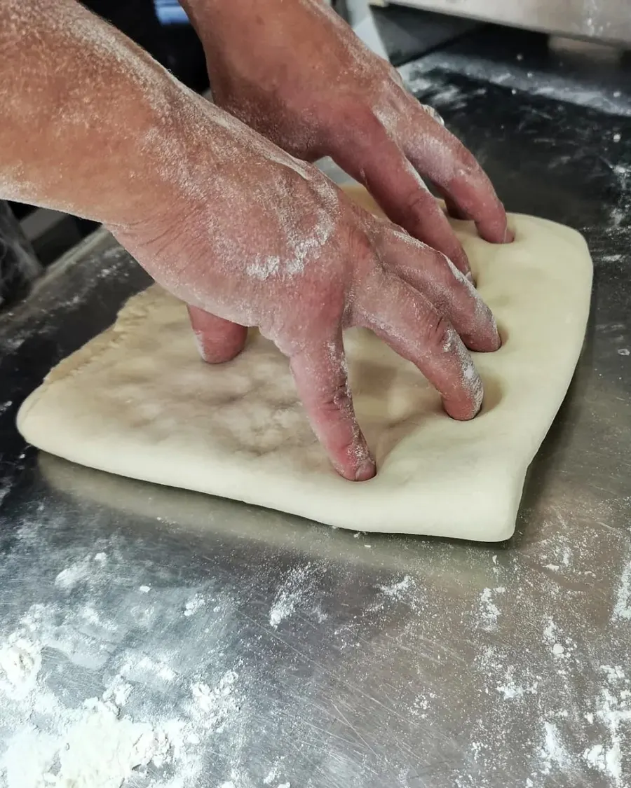
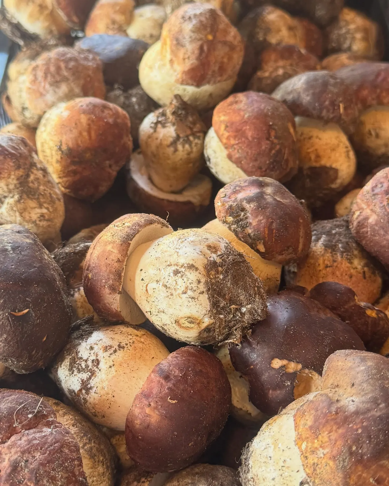
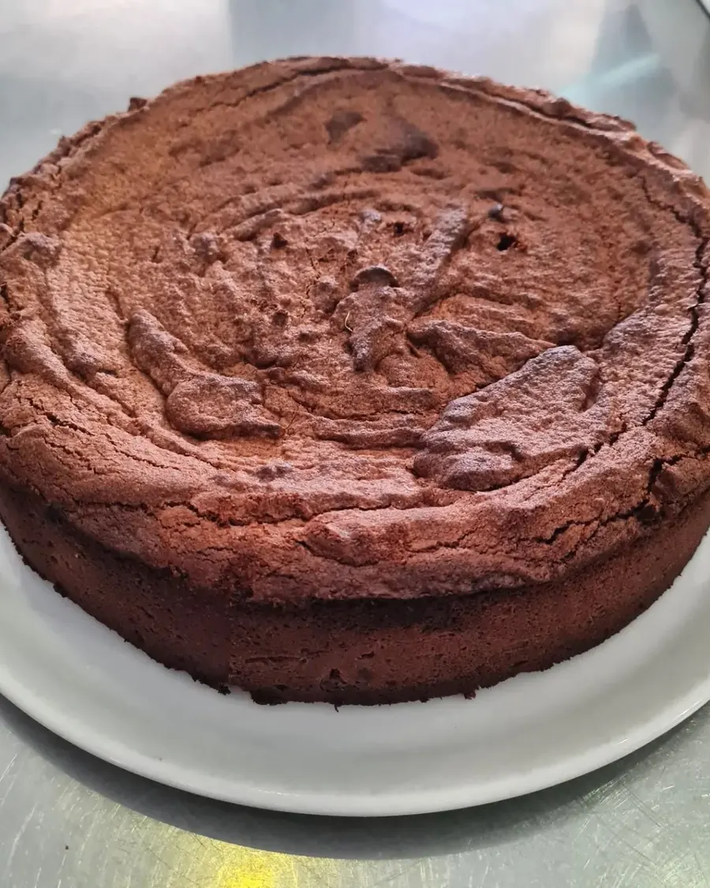

Mangiare bene, spendere poco.
Pesce, carne e pasta fatta in casa, con un menu che cambia ogni giorno. A pranzo e a cena, nella veranda affacciata sul verde.
Prenota: 0383 940154 Gira il menu
4,4 su Google · 1.000 recensioni (ottobre 2026)



«Ma lo fate voi?» Sì.
È una delle domande che ci fate più spesso. La pasta ripiena, i dolci, il pesce che arriva intero e si lavora qui: in cucina non ci si ferma mai.
- Pescecrudi, carpacci, fritti e tranci, secondo quello che arriva fresco
- Carnebattute al coltello, tagliate, selvaggina
- Pastacappellacci fatti a mano, spaghetti alla chitarra cacio e pepe
- Dolcicheesecake, torte al cioccolato: pasticceria di casa